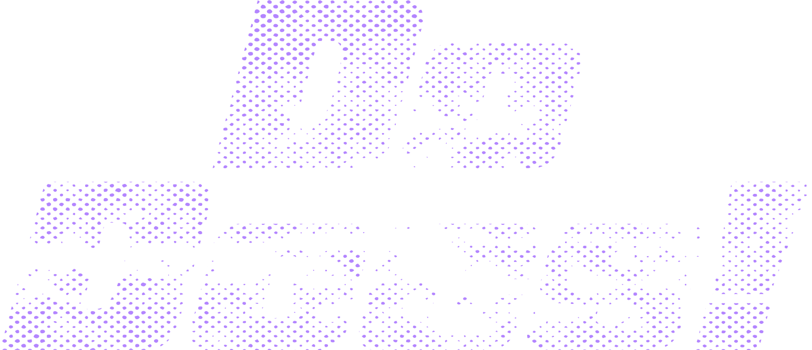

2026년 콘텐츠 창의인재동반사업 dodocs.mediact.org Do Docs! 다큐멘터리 신진 창작자 양성 프로젝트2026년 콘텐츠 창의인재동반사업 [Do Docs 다큐멘터리 신진 창작자 프로젝트] 지원작을 소개합니다. 다큐멘터리 전문가들의 멘토링을 거쳐 세상을 만날 준비를 하고 있는 이 작품들의 파트너가 되어 주세요. 신진 창작자들과 함께할 제작사·배급사·유관단체를 기다립니다.
한국콘텐츠진흥원·(사)한국영상미디어교육협회(미디액트)